if(!require("pacman")) install.packages("pacman")Loading required package: pacmanpacman::p_load(tidyverse, readxl, writexl, haven, sjlabelled, foreign, janitor,
esquisse, RColorBrewer, wesanderson)Ahora cargaremos nuestros paquetes para hoy.
if(!require("pacman")) install.packages("pacman")Loading required package: pacmanpacman::p_load(tidyverse, readxl, writexl, haven, sjlabelled, foreign, janitor,
esquisse, RColorBrewer, wesanderson)Y cargaremos la base de datos de concentrado.
concentrado2020 <- haven::read_dta("datos/concentrado2020.dta")Cheatsheet en español: https://diegokoz.github.io/intro_ds/fuentes/ggplot2-cheatsheet-2.1-Spanish.pdf
El ggplot2 se basa en la construcción de gráficos a partir de tres componentes:
Datos,
Coordenadas y
Objetos geométricos
Esto será nuestra “gramática de gráficas”
Para visualizar los resultados, nosotres asignamos variables a las propiedades visuales o estéticas
Por ejemplo: los tamaños, colores y posiciones.
De manera genérica, podríamos pensar que el código para el ggplot será de la siguiente manera:
ggplot(datos) + (geometria) + (esteticas)
Esta semana, haremos gráficas para una sola variable, cuantitativa o cualitativa.
La próxima semana haremos gráficas para dos variables.
Para las variables cuantitativas, las gráficas más utilizadas son los histogramas, gráficos de densidad.
Menos utilizados: de área y polígonos de frecuencias (ver https://r-graph-gallery.com/)
Bueno, en series de tiempo también se utilizan los gráficos de líneas.
Veamos primero los componentes de nuestra gramática. En los datos incluimos la variable que queremos y la base de datos que ocuparemos. En este caso es la edad del jefe del hogar.
concentrado2020 %>%
ggplot(aes(x=edad_jefe))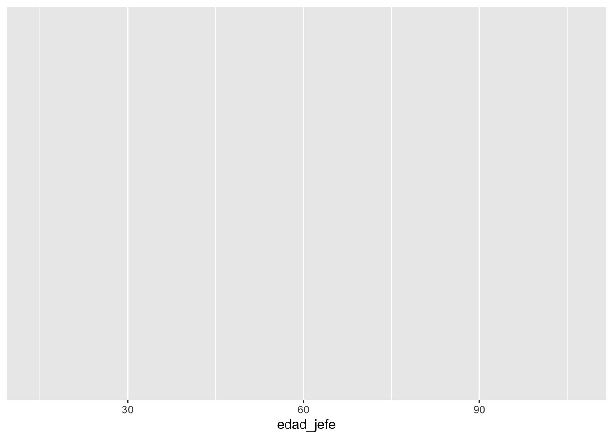
Ahora agregaremos la geometría.
concentrado2020 %>%
ggplot(aes(x=edad_jefe)) +
geom_histogram()`stat_bin()` using `bins = 30`. Pick better value with `binwidth`.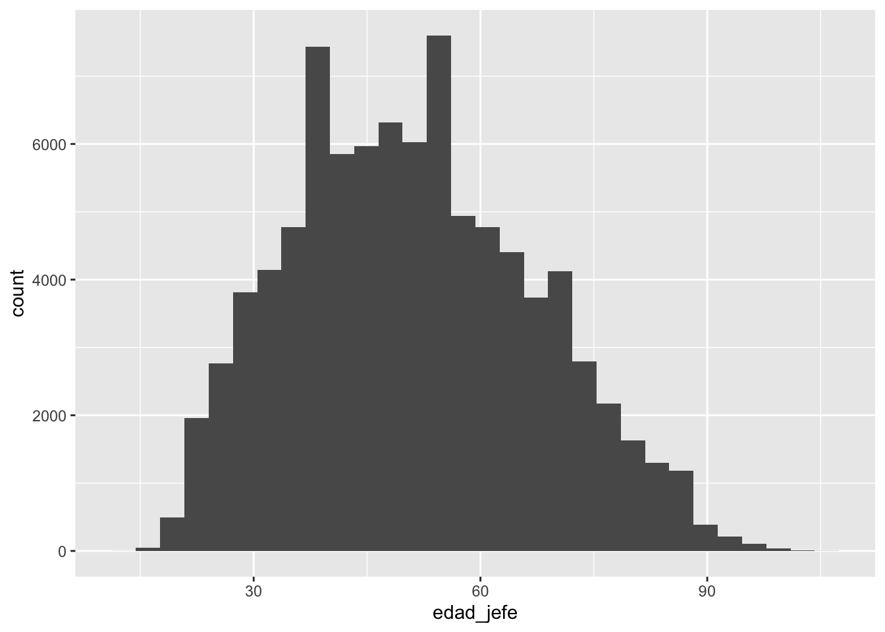
Vemos que el software nos avisa cuántas clases/intervalos está utilizando. Podemos cambiarlas.
concentrado2020 %>%
ggplot(aes(x=edad_jefe)) +
geom_histogram(bins=12)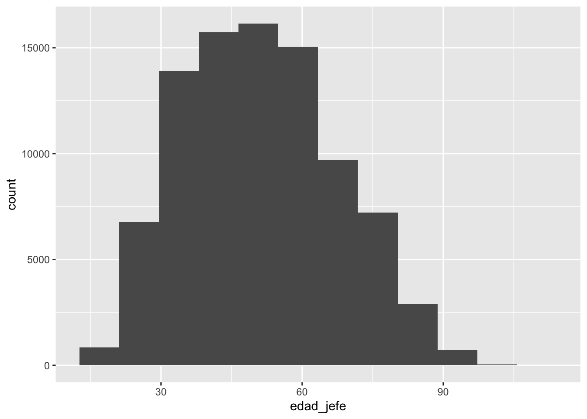
Una vez que tenemos nuestros datos y geometría, vamos a editar: primero le cambiamos el color y le quitamos el fondo gris
concentrado2020 %>%
ggplot(aes(x=edad_jefe)) +
geom_histogram(bins=12, color="#000000", fill="darkblue")+
theme_classic()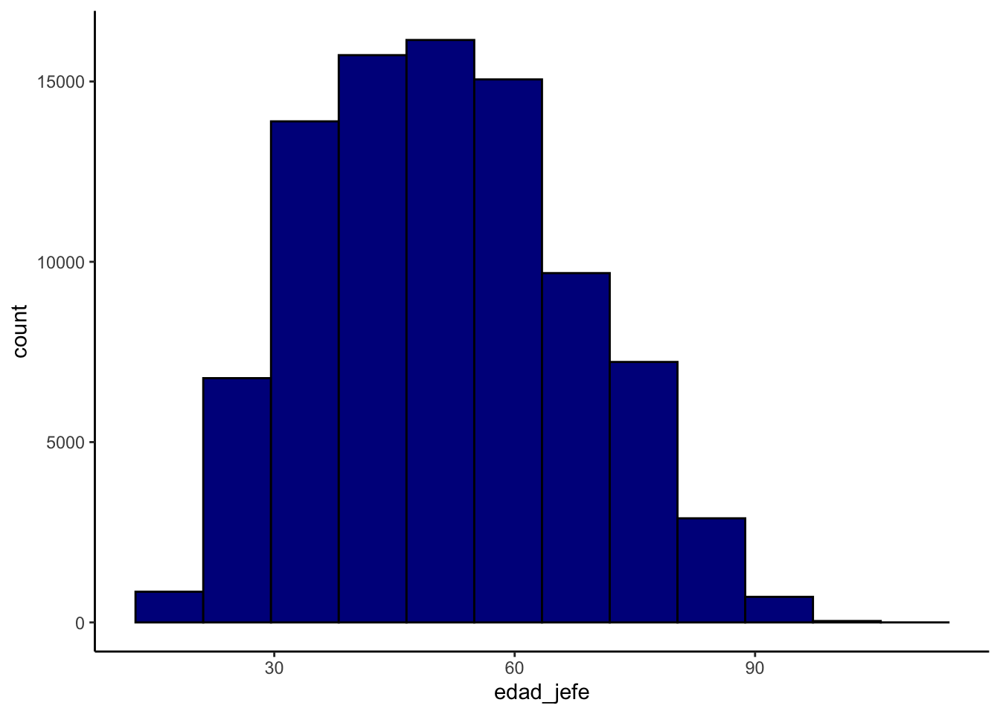
Podemos agregar manualmente los colores, como lo hicimos anteriormente.
Sin embargo, existen paquetes que ya traen paletas cargadas y que se pueden utilizar dependiendo de los datos.
Una paleta es la de RColorBrewer: https://www.geeksforgeeks.org/introduction-to-color-palettes-in-r-with-rcolorbrewer/
Esta paleta de colores distingue si los datos son secuenciales, divergentes o cualitativos.
Por ejemplo:
display.brewer.all(type="seq") #secuenciales
display.brewer.all(type="div") #divergentes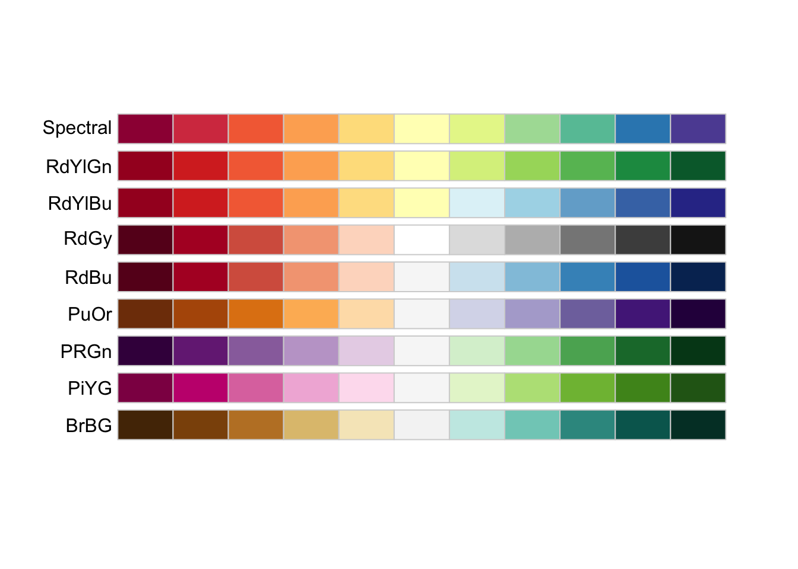
display.brewer.all(type="qual") #datos cualitativos
brewer.pal.info #Podemos enlistar todos los colores maxcolors category colorblind
BrBG 11 div TRUE
PiYG 11 div TRUE
PRGn 11 div TRUE
PuOr 11 div TRUE
RdBu 11 div TRUE
RdGy 11 div FALSE
RdYlBu 11 div TRUE
RdYlGn 11 div FALSE
Spectral 11 div FALSE
Accent 8 qual FALSE
Dark2 8 qual TRUE
Paired 12 qual TRUE
Pastel1 9 qual FALSE
Pastel2 8 qual FALSE
Set1 9 qual FALSE
Set2 8 qual TRUE
Set3 12 qual FALSE
Blues 9 seq TRUE
BuGn 9 seq TRUE
BuPu 9 seq TRUE
GnBu 9 seq TRUE
Greens 9 seq TRUE
Greys 9 seq TRUE
Oranges 9 seq TRUE
OrRd 9 seq TRUE
PuBu 9 seq TRUE
PuBuGn 9 seq TRUE
PuRd 9 seq TRUE
Purples 9 seq TRUE
RdPu 9 seq TRUE
Reds 9 seq TRUE
YlGn 9 seq TRUE
YlGnBu 9 seq TRUE
YlOrBr 9 seq TRUE
YlOrRd 9 seq TRUEdisplay.brewer.all(colorblindFriendly=T) #La última columna nos dice si alguien con problemas para distinguir colores, los puede ver o no.
Otra paleta es la de Wesanderson, se inspira en sus peliculas: https://rforpoliticalscience.com/2020/07/26/make-wes-anderson-themed-graphs-with-wesanderson-package-in-r/ Debes escoger el nombre de la paleta y cuántos colores vas a usar.
wes_palette("Royal1")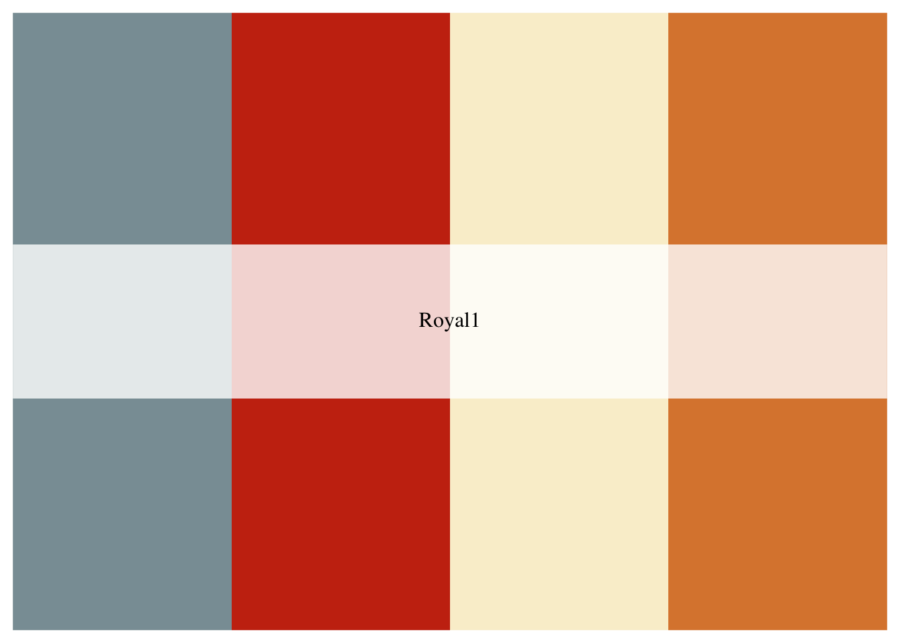
wes_palette("GrandBudapest1")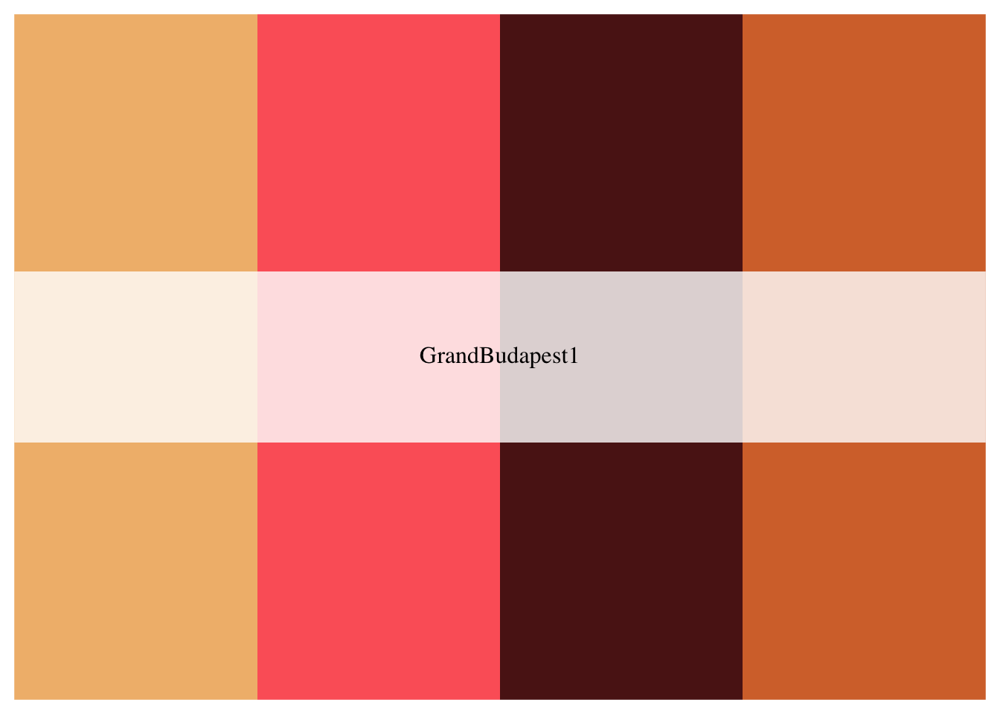
wes_palette("Cavalcanti1")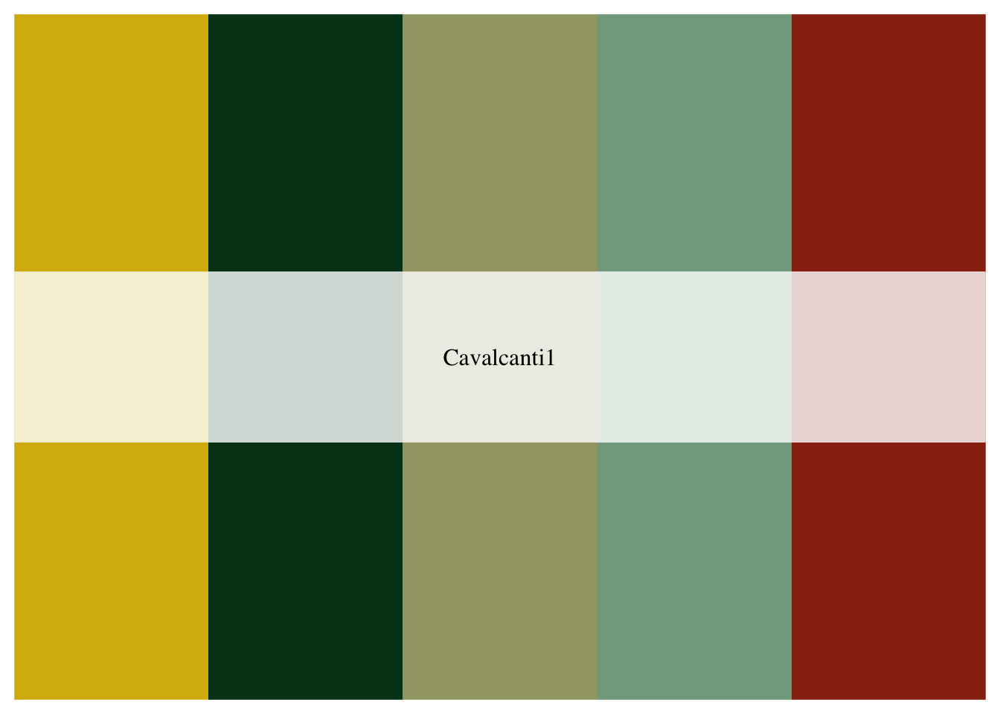
wes_palette("Cavalcanti1", 3)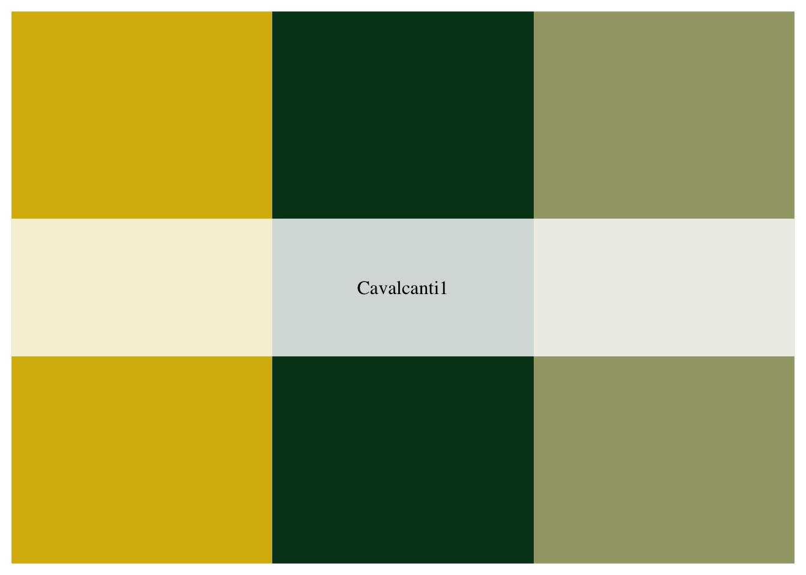
La lógica de estos paquetes es crear nuestra paleta de colores pensando en cuántos vamos a tener que utilizar. Entonces, haremos la nuestra.
pal <- wes_palette(12, name = "Royal1", type = "continuous")Entonces, podemos volver a hacer nuestro gráfico escogiendo alguno de ellos.
concentrado2020 %>%
ggplot(aes(x=edad_jefe)) +
geom_histogram(bins=12, color="#000000", fill=pal)+
theme_classic()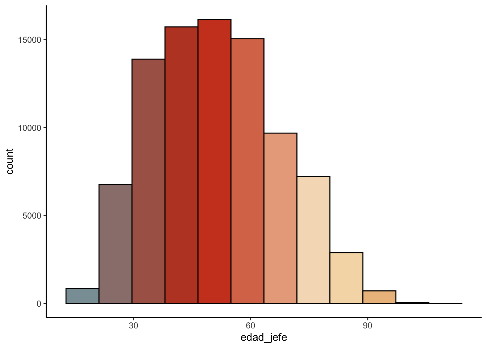
Podemos agregarle el valor mínimo, máximo y la media, pero para eso tenemos que hacer un pequeño dataframe
anotaciones <- data.frame(
x = c(round(min(concentrado2020$edad_jefe), 2), round(mean(concentrado2020$edad_jefe), 2), round(max(concentrado2020$edad_jefe), 2)),
y = c(2500, 17000, 2000),
label = c("Min:", "Media:", "Max:")
)
concentrado2020 %>%
ggplot(aes(x=edad_jefe)) +
geom_histogram(bins=12, color="#000000", fill="darkblue")+
theme_classic()+
geom_text(data = anotaciones, aes(x = x, y = y, label = paste(label, x)), size = 3.5, fontface = "bold")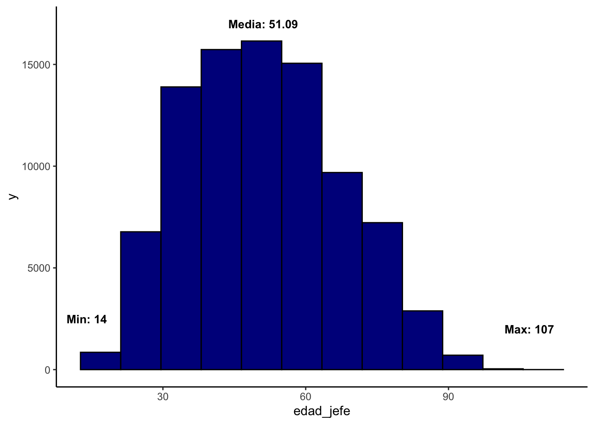
También le vamos a agregar el título, subtítulo y fuente
concentrado2020 %>%
ggplot(aes(x=edad_jefe)) +
geom_histogram(bins=12, color="#000000", fill="darkblue")+
theme_classic()+
geom_text(data = anotaciones, aes(x = x, y = y, label = paste(label, x)), size = 3.5, fontface = "bold")+
labs(
x = "Edad del jefe del hogar",
y = "Frecuencia",
title = "Edades de los jefes y jefas de hogar en México, 2020",
caption = "Fuente: elaboración propia con base en ENIGH 2020"
) 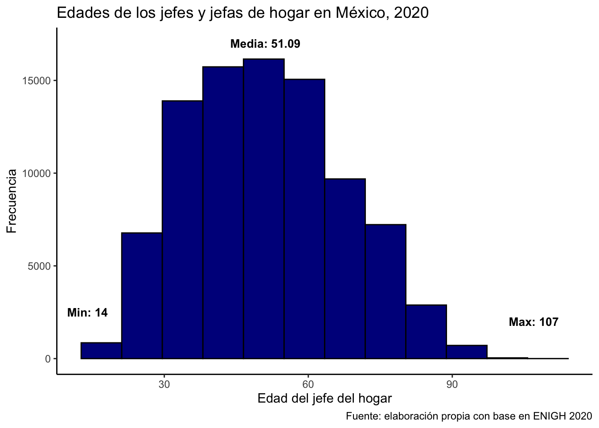
Al título y fuente también podemos agregarle los tipos de letra
concentrado2020 %>%
ggplot(aes(x=edad_jefe)) +
geom_histogram(bins=12, color="#000000", fill="darkblue")+
theme_classic()+
geom_text(data = anotaciones, aes(x = x, y = y, label = paste(label, x)), size = 3.5, fontface = "bold")+
labs(
x = "Edad del jefe del hogar",
y = "Frecuencia",
title = "Edades de los jefes y jefas de hogar en México, 2020",
caption = "Fuente: elaboración propia con base en ENIGH 2020"
)+
theme(
plot.title = element_text(color = "darkgreen", size = 14, face = "bold"),
plot.caption = element_text(face = "italic")
)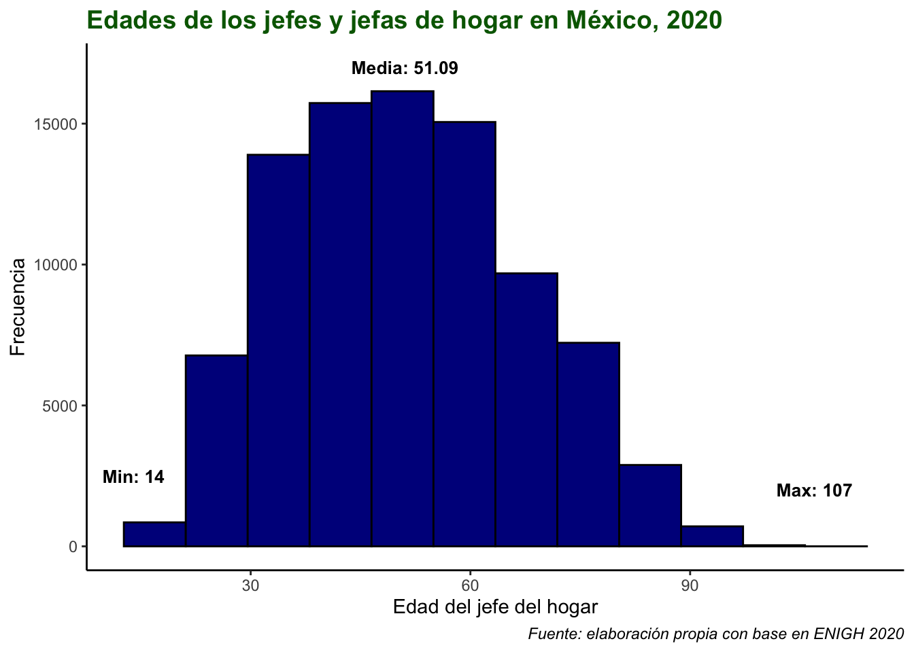
Podemos cambiar el histograma por un gráfico de densidad, para ello cambiamos nuestra base pequeña de anotaciones.
anotaciones <- data.frame(
x = c(round(min(concentrado2020$edad_jefe), 2), round(mean(concentrado2020$edad_jefe), 2), round(max(concentrado2020$edad_jefe), 2)),
y = c(0.0025, 0.025, 0.0025),
label = c("Min:", "Media:", "Max:")
)
concentrado2020 %>%
ggplot(aes(x=edad_jefe)) +
geom_density(adjust = 1L, color="#000000", fill="darkblue")+
theme_classic()+
geom_text(data = anotaciones, aes(x = x, y = y, label = paste(label, x)), size = 3.5, fontface = "bold")+
labs(
x = "Edad del jefe del hogar",
y = "Densidad",
title = "Edades de los jefes y jefas de hogar en México, 2020",
caption = "Fuente: elaboración propia con base en ENIGH 2020"
)+
theme(
plot.title = element_text(color = "darkgreen", size = 14, face = "bold"),
plot.caption = element_text(face = "italic")
)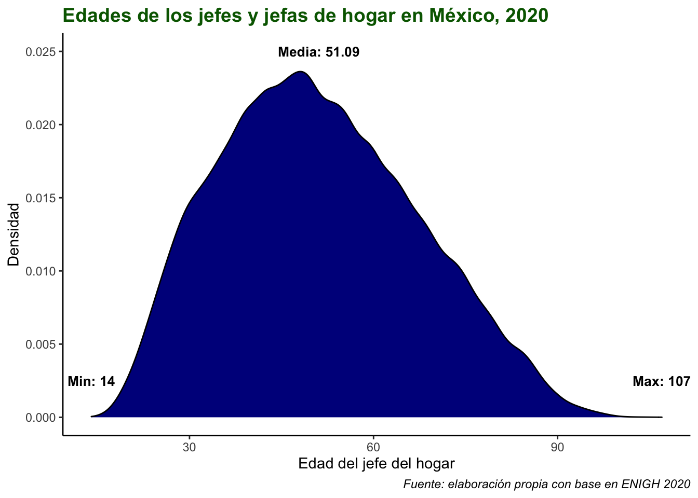
Por último, también podemos hacer un boxplot
anotaciones <- data.frame(
x = c(round(min(concentrado2020$edad_jefe), 2), round(mean(concentrado2020$edad_jefe), 2), round(max(concentrado2020$edad_jefe), 2)),
y = c(-0.37, 0.4, -0.37),
label = c("Min:", "Media:", "Max:")
)
concentrado2020 %>%
ggplot(aes(x=edad_jefe)) +
geom_boxplot(color="#000000", fill="darkblue") +
theme_classic()+
geom_text(data = anotaciones, aes(x = x, y = y, label = paste(label, x)), size = 3.5, fontface = "bold")+
labs(
x = "Edad del jefe del hogar",
y = "",
title = "Edades de los jefes y jefas de hogar en México, 2020",
caption = "Fuente: elaboración propia con base en ENIGH 2020"
)+
theme(
plot.title = element_text(color = "darkgreen", size = 14, face = "bold"),
plot.caption = element_text(face = "italic")
)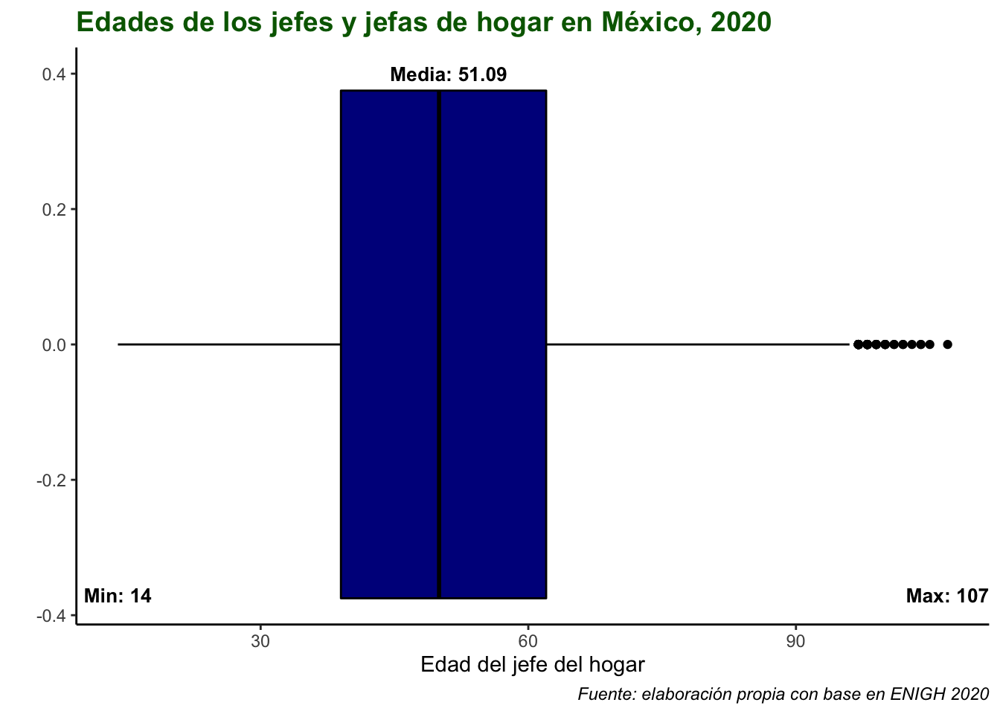
El paquete {esquisse} es una forma de graficar de forma más sencilla
elaboren un histograma, diagrama de caja y brazos o un diagrama de densidad con una variable cuantitativa que seleccionen. Modifica los colores, etiquetas, eje y, eje x, título, fuente, etc.